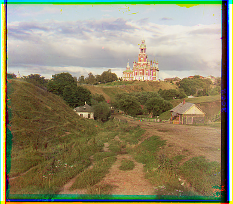
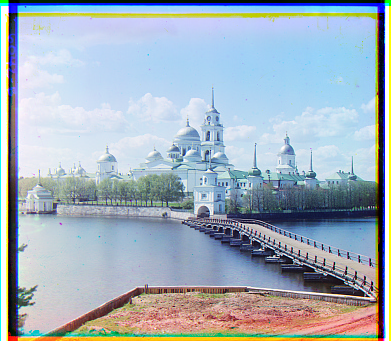
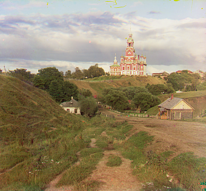
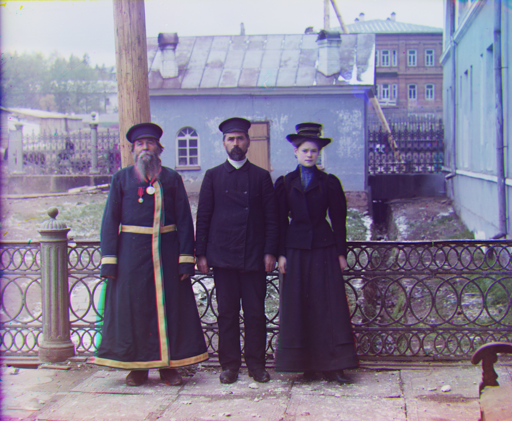
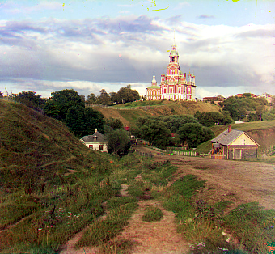
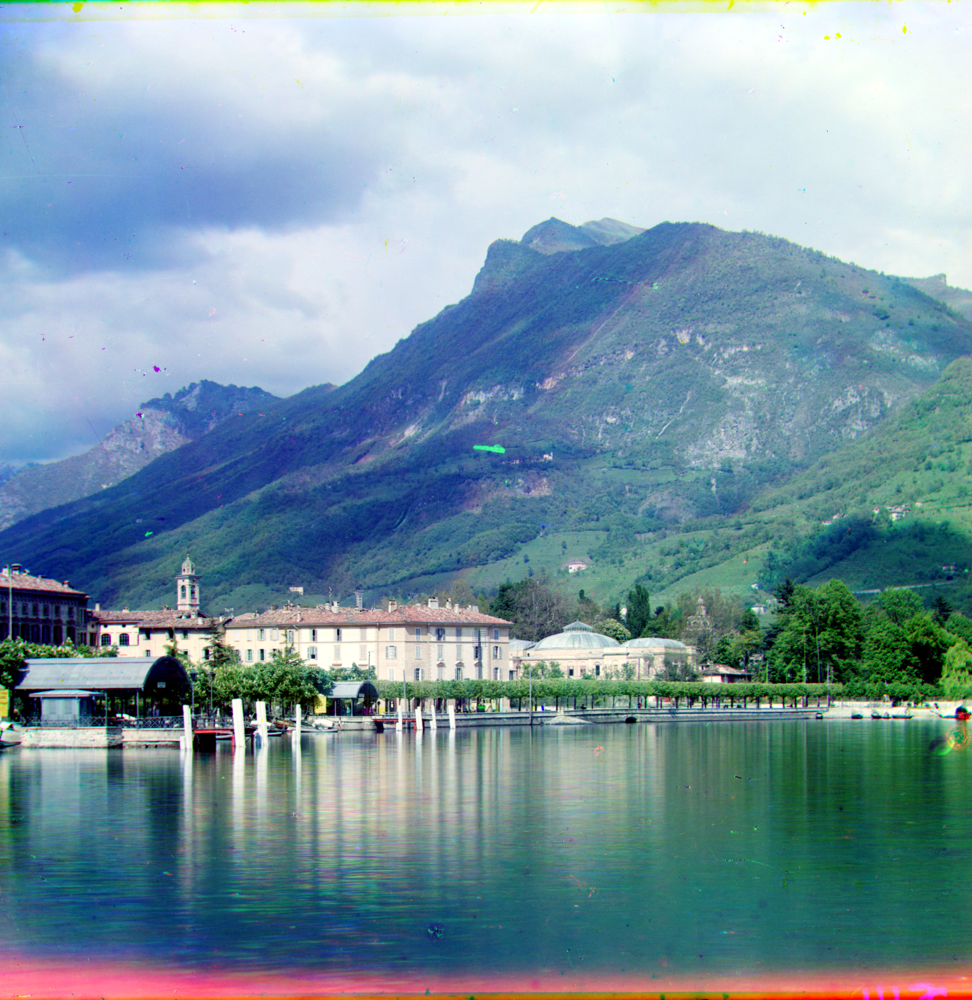
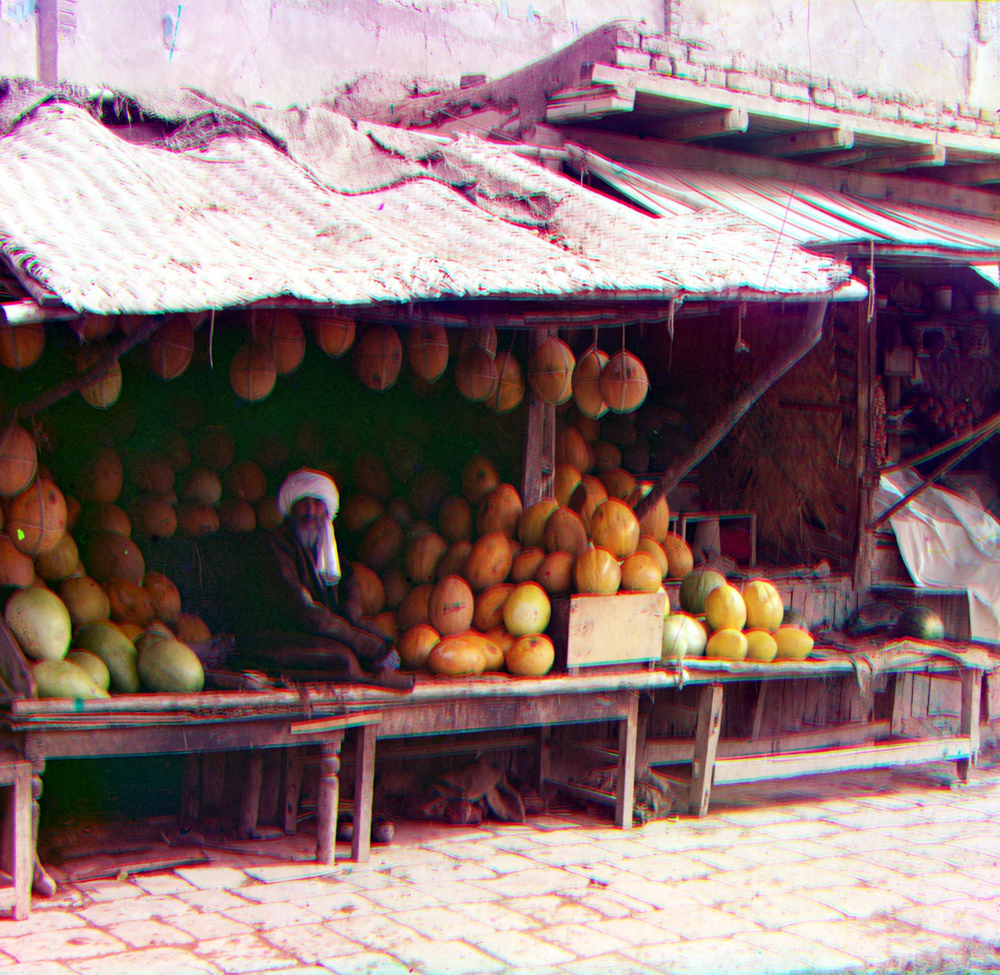

Project 1: Colorizing the Prokudin-Gorskii Collection
CS 280A — Computer Vision and Computational Photography
Overview
Each glass plate contains three grayscale exposures (B, G, R). I split the plate vertically into thirds,
then align Red and Blue to Green with a multi-scale pyramid and evaluate similarity with
normalized cross-correlation (NCC) on the interior crop to avoid border bias.
Naive Single-Scale Alignment
Naive implementation: I search a fixed window of shifts [−15, 15] and pick the best
vertical/horizontal displacement by NCC (SSD gave similar results, so I omitted those images). I initially aligned
R and G to Blue, but switching to aligning both R and B to Green produced better results (Green tends to carry
strong scene structure). For scoring I crop off about 10% on each side to suppress chromatic border artifacts.
With this setup, small .jpg plates align perfectly in under a second. On large .tif plates the ±15 window
can be too small, and simply enlarging it makes the exhaustive search too slow.

Naive (no pyramid/features) — B:(-5, -2) R:(7, 1)

Naive (no pyramid/features) — B:(3, -2) R:(6, 1)
Image Pyramid (Raw-Intensity NCC)
Pyramid approach: I build a coarse-to-fine pyramid by bilinear, anti-aliased downsampling until the
smaller side falls below a min_size (e.g., 64 px). At each level, channels are aligned using raw grayscale
intensities and NCC on the interior 80% (≈10% crop on all sides). I start at the coarsest level, take the best
shift, scale it by 2 to initialize the next level, and refine in a smaller window. The search radius halves
per level and is capped around ±40 px (typically much less). In practice, .jpg plates finish in <1 s; large
.tif plates take ~30 s per image on my setup.
Results — Pyramid Alignment (Raw)
Direct RGB composites from the pyramid (no post-processing).
I first tried Sobel on a contrast-stretched grayscale image and scanned inward from each side, but with multiple
colored bands it tended to stop at the first strong band it saw, so it under-cropped—especially on the sides.
I then switched to a Laplacian edge map (after a light blur), computed per color channel and combined,
which reacts to sharp transitions regardless of color and handled mixed-color frames better. I also added a simple
darkness profile so nearly black borders count even when their edges are soft. Both signals are measured in
central stripes and normalized to interior medians, so the threshold adapts per image. Instead of cutting at the first
threshold crossing, I smooth the 1D scores, require K consecutive rows/columns above threshold, scan the whole
margin, keep the last qualifying run, and crop just past it. In short: don’t cut until I’ve seen the whole border
zone and found the last thing that still looks like a border. This was trickier than expected—balancing removal of
colored frames while not trimming real content (e.g., a uniform sky) required careful tuning.
Before (Pyramid)
After (Cropped)

Before (Pyramid)
After (Cropped)

2 — Color Contrasting
I tried both global and per-channel percentile stretching. Per-channel 1–99% worked best overall: it lifted shadows
and controlled highlights without fighting later color-cast correction. A global stretch sometimes preserved a tint
(treating all channels together), so skies/foliage stayed too blue/green. More aggressive 2–98% began to clip small
bright details; 1–99% was a safer default. I apply contrast after alignment/cropping so boosted edges don’t bias the match.
Before (Pyramid)
After (Contrast)

Before (Pyramid)
After (Contrast)

3 — White Balancing
Gray-World (match channel means) underperformed: the “average scene ≈ gray” assumption isn’t true here—many images
are dominated by blue sky, green vegetation, or strong costume colors, and border damage can skew means. It often
over-corrected toward an inappropriate neutral. Switching to Max-RGB (equalize the ~99th percentile per channel)
worked better because it anchors on highlights that are usually intended to be neutral (stone, clouds, white cloth).
Using a percentile avoids hot pixels/scratches. Caveat: if the brightest areas aren’t neutral (e.g., warm highlights),
Max-RGB can push slightly cool, but across this dataset it produced more stable, natural whites.
Before (Pyramid)
After (WB)
Before (Pyramid)
After (WB)

4 — Color Mapping (3×3 Linear Mix)
There’s no guarantee the historical filters map 1:1 to modern RGB. I used a near-identity 3×3 mix (row-sum=1)
with a small cross-talk (≈10%) so each channel gets a tiny contribution from the others. This reduced odd tints without
changing brightness much. Stronger mixes (≥0.15) looked oversaturated, so a subtle mix worked best. This tweak helps, but
compared to cropping/WB it’s a smaller visual change.
Before (Pyramid)
After (Color Mix)
Before (Pyramid)
After (Color Mix)
5 — Better Features (Gradient Magnitude)
Raw-pixel NCC worked, but some bright images aligned while still looking a bit soft—likely small residual misalignment.
Switching the pyramid to gradient magnitude (Sobel √(Gx²+Gy²)) + NCC made a visible difference on high-key scenes,
notably statue.tif: edges became crisper once channels were aligned by structure rather than intensity. Gradients are
more exposure-insensitive, so the matcher locks onto edges instead of being distracted by brightness differences. Low-texture
regions still give weaker cues, but overall sharpness improved on several plates.